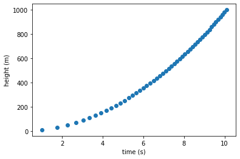
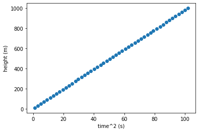
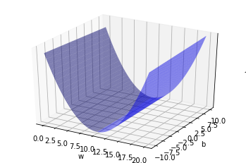
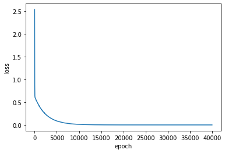

선형 회귀 (Linear Regression)
딥러닝의 세계로 들어가기 위해 알아야 하는 첫번째 모델인 선형 회귀(Linear Regression)에 대해 알아보고 keras를 이용해서 모델링을 해보자!
실제로 돌려 보고 싶으면 구글 코랩으로 ~

문제 (Problem)
💰 고객
서로 다른 높이에서 공을 떨어뜨려서
땅에 닫는 시간을 측정한 데이터가 있네.이 데이터를 가지고
땅에 떨어지는 시간이 주어지면
떨어뜨린 높이를 자동으로 알고 싶네.만들어 줄 수 있지?
데이터는 아래에 있네
import numpy as np
def get_data():
np.random.seed(1)
data_size = 50
x = np.linspace(10, 1000, data_size)
y = np.sqrt(x/9.80665)
y += np.random.uniform(-0.01, 0.01, data_size)
return x, y
height_data, time_data = get_data()
print('data length = ', len(height_data))
print('\nheight(m) data = ', height_data[:10])
print('\ntime(sec) data = ', time_data[:10])
data length = 50
height(m) data = [ 10. 30.20408163 50.40816327 70.6122449 90.81632653
111.02040816 131.2244898 151.42857143 171.63265306 191.83673469]
time(sec) data = [1.00815043 1.75938774 2.25720368 2.67941116 3.03607298 3.3565059
3.65175391 3.92646805 4.18143387 4.42366033]
데이터 분석 (Data Analysis)
⚙️ 엔지니어
데이터가 어떤 모양인지
확인해 보아야 겠군
%matplotlib inline
import matplotlib.pyplot as plt
plt.scatter(time_data, height_data)
plt.xlabel('time (s)')
plt.ylabel('height (m)')
plt.show()

⚙️ 엔지니어
데이터가 많이 휘어 있군…
지금 나는 직선으로만 모델링을 할 수 있는데…이러면 나가린데…
데이터 변환 (Data Transformation)
⚙️ 엔지니어
어라… 가만히 보니 이 그래프 어디에서 많이 본건데…
이거 \(y=ax^2 (a\geqq0, x\geqq0)\) 그래프 잖아!음… 거리가 늘어날 수록 시간은 제곱으로 늘어난다는 것인데…
그렇다면 거리와 시간의 제곱은 비례할 거고
시간 데이터를 시간의 제곱 데이터로 변환하면
둘 사이의 관계가 직선에 가깝게 될 거 같군.
time2_data = time_data * time_data
plt.scatter(time2_data, height_data)
plt.xlabel('time^2 (s)')
plt.ylabel('height (m)')
plt.show()

⚙️ 엔지니어
좋았어!
그럼 변환된 데이터로 선형회귀(Linear Regression) 모델링을 시작해 보지
x = time2_data
y = height_data
print('x = ', x[:10])
print('x.shape= ', x.shape)
print('\ny = ', y[:10])
print('y.shape= ', y.shape)
x = [ 1.01636729 3.09544521 5.09496843 7.17924417 9.21773915 11.26613183
13.33530659 15.41715136 17.48438924 19.56877074]
x.shape= (50,)
y = [ 10. 30.20408163 50.40816327 70.6122449 90.81632653
111.02040816 131.2244898 151.42857143 171.63265306 191.83673469]
y.shape= (50,)
선형 모델링 (Linear Modeling)
⚙️ 엔지니어)
모델을 \(y=wx+b\)로 놓고
주어진 데이터에 가장 가까운 직선을 표시하는
\(w\)와 \(b\)를 구하면 끝!\(w\)는 직선의 기울기고 \(b\)는 \(y\)절편이라고 배웠지만,
이제 부터는 \(w\)는 weight고
\(b\)는 bias로 부르도록 하겠다…왜? 멋있으니까!
그런데… \(w\)와 \(b\)를 어떻게 구하면 되지?
손실 함수 (Loss function)
⚙️ 엔지니어
남여 커플 10명이 모여서 게임을 시작한다.
남자는 여자친구의 몸무게를 말하고 가장 근접한 몸무게를 맞추는 커플이 1등이 된다.
1등을 정하는 방법은 남자가 말한 몸무게와 여자친구가 말한 실제 몸무게의 차이를 점수로 계산하고,
가장 점수가 낮은(가장 비슷하게 맞춘) 커플에게 1등을 주면 된다.실제로 점수를 계산할 때에는 단순한 차이값을 사용하지 않고
차이값을 제곱하고 반으로 나누어 준 값을 사용한다.그리고 커플 10명 전체에 대한 점수는 각 커플들의 점수의 평균을 내면 된다.
하나의 데이터 세트(\(x^{(i)}, y^{(i)}\))를 사용해서 모델에서 얻은 값과 실제 값과의 차이(Loss)를 구하는 함수를 구해보자.
여기서 \(x^{(i)}\)는 i번째 \(x\)값이고 \(y^{(i)}\)은 i번째 \(y\)값이다.
일단 \(w\)와 \(b\)는 임의의 값으로 놓자. 그리고 모델에 \(x^{(i)}\)을 넣고 계산한 결과 값 \({\hat y}^{(i)}\)과 실제 값 \(y^{(i)}\)의 차이를 구한다. 선형 모델링에서는 제곱 오차(squred error)를 사용한다.
\(L({\hat y}^{(i)}, y^{(i)})={1\over2}({\hat y}^{(i)}-y^{(i)})^2\)
모든 데이터(m개의 데이터 세트)로 부터 얻은 것을 평균(mean squred error)한것이 손실 함수(Loss function)이다. 손실 함수는 \(w\)와 \(b\)의 함수로 나타낼 수 있다.
\({\large J}(w, b) = {1\over m}\sum_{i=1}^m L({\hat y}^{(i)}, y^{(i)}) = {1\over {2m}}\sum_{i=1}^m ({\hat y}^{(i)}-y^{(i)})^2\)
⚙️ 엔지니어
손실 함수
\({\large J}(w, b) = {1\over {2m}}\sum_{i=1}^m ({\hat y}^{(i)}-y^{(i)})^2\)
가 최소가 되는 \(w\)와 \(b\)를 찾으면 되겠군!
손실 함수 (Loss function) 시각화
⚙️ 엔지니어
우선 손실 함수(Loss function)가 어떻게 생겨 먹었는지 살펴 보자.
x축을 \(w\)로 놓고, y축을 \(b\)로 놓고, z축을 손실 함수 \({\large J}(w, b)\)로 그래프를 그려 보면
어떻게 최소값을 찾을지 감이 올 것 같다.일단 \(w\)는 딱봐도 양수니까
\(0\leqq w \leqq 20.0\) 정도로 잡고,
\(b\)는 \(-10.0\leqq b \leqq 10.0\)으로 잡아보자.
간격은 0.1 간격으로
import numpy as np
from sklearn.metrics import mean_squared_error
from mpl_toolkits import mplot3d
# W,b의 범위를 결정한다.
w = np.arange(0, 20.0, 0.1)
b = np.arange(-10.0, 10.0, 0.1)
j_array = []
# (200, 200) 매트릭스로 변환한다.
W, B = np.meshgrid(w, b)
# w, b를 하나씩 대응한다.
for we, be in zip(np.ravel(W), np.ravel(B)):
y_hat = np.add(np.multiply(we, x), be)
# Cost function
mse = mean_squared_error(y_hat, y) / 2.0
j_array.append(mse)
# 손실(Loss)을 구하고 (200, 200) 매트릭스로 변환한다.
J = np.array(j_array).reshape(W.shape)
# 서피스 그래프를 그린다.
fig = plt.figure()
ax = plt.axes(projection="3d")
ax.plot_surface(W, B, J, color='b', alpha=0.5)
ax.set_xlabel('w')
ax.set_ylabel('b')
ax.set_zlabel('J')
ax.set_zticks([])
plt.show()

⚙️ 엔지니어
U 모양으로 구부러진 모양이다!
\(w\)가 10근처에서 손실 함수가 최소값을 가지는 것을 볼 수 있다.\(b\)는 손실 함수가 최소가 되는 값이 잘 보이지 않는다.
확대를 하면 보이겠지만 귀찮다.이제 램덤하게 \(w\)와 \(b\)값이 주어지더라도
자동으로 손실 함수의 최소값을 찾는 방법을 찾으면 된다.어떻게 자동으로 찾지?
경사 하강법 (Gradient Descent)
⚙️ 엔지니어
등산에서 쓰는 말처럼 들리는 이 방법은
내가 현재 있는 산의 위치에서
경사(기울기)를 확인하고
경사가 아래인 방향으로 한걸음 내려가고,
경사를 확인하고,
또 한걸음 내려가고를
계속 반복하면
결국 골짜기 가장 아래로 도착할 수 있다는 방법이다.여기서 경사를 확인 하는 방법이
미분이다.잘 모르겠다고?
아래에 간단한 예제를 보자
이차 함수에서 미분으로 최소값 찾기
\(y=x^2-2x+4\)에서 \(y\)가 최소가 되는 \(x\)값을 미분으로 구해 보자.
* 참고로 \(y=(x-1)^2 +3\)으로 정리하면 \(x=1\)일때 \(y\)는 최소값 3을 갖는다는 것을 알 수 있다.
- \(x\)값을 아무거나 하나 선택한다. 여기서는 \(x=3\)을 선택하자
- \(x=3\)일때 순간 변화율을 계산한다. 순간 변화율은 미분이다. \({dy\over dx}=2x-2\) 이므로 순간 변화율은 4이다.
- 순간 변화율이 0보다 크면 \(x\)를 -방향으로 이동한다. 이떄 얼마나 이동하느냐가 중요한데 순간 변화율 4만큼 이동하면 최소값을 지나쳐 버린다. 따라서 조금씩 움직이도록 순간 변화율에 0.01배 만큼 움직이게 한다. (\(x\)를 0.04 만큼 -방향으로 이동한다. 즉 \(x=2.96\))
- 순간 변화율이 0보다 작으면 x를 +방향으로 이동한다. 위와 마찬가지로 미분값에 0.01배 만큼 움직이게 한다. 여기서 0.01을 learning rate라고 하고 \(\alpha\)로 표시한다.
1000번 반복한다.
def derivative(x): dydx = 2*x-2 return dydx epoch = 1000 # 반복 개수 learning_rate = 0.01 # alpha xx = 3 # 초기 x값 for i in range(epoch): xx = xx - learning_rate * derivative(xx) print('x for minimum y is: ', xx)x for minimum y is: 1.0000000033659349
⚙️ 엔지니어
좋았어!
\(w\)와 \(b\)에 대한 손실 함수의 순간 변화율을 구해서
반복해서 업데이트를 해 주면
자동으로 손실 함수의 최소 값에 도달 할 수 있겠어!수식으로 표현해보자
REPEAT(epoch) {
\(w:=w-\alpha {\partial {J(w,b)}\over \partial w}\)\(b:=b-\alpha {\partial{J(w,b)}\over \partial b}\) , \(\alpha=0.01\) learining rate
}아하! 손실함수의 최소값을 찾아 가는 것이 기계(Machine)가 학습(Learning)하는 방법이구나!
정리
⚙️ 엔지니어
선형 모델(Linear model)을 만드는 방법을 정리해 보자.
1. \(\hat{y}=wx+b\) 함수를 정의한다.
2. 손실 함수 (Loss function)를 정의한다. 여기서는 평균 제곱 오차(mean squared error)를 사용한다.
3. 손실 함수의 최소값을 찾는 방법을 선택한다. 여기서는 경사 하강법(gradient descnet)를 사용한다. 그리고 최소값을 찾는 방법(알고리즘)을 옵티마이저(Optimizer)라고 부르겠다.
4. 설정된 회수(100040000번) 만큼 반복해서 주어진 데이터로 모델을 최적화(fit) 시킨다.
텐서플로우(Tensorflow)로 모델링(Modeling)
⚙️ 엔지니어
좋았어!
이제 텐서플로우(Tensorflow)가 냠냠한
케라스(Keras)를 이용해서 구현을 해보자!
정규화(Normalization)
⚙️ 엔지니어
내가 해봐서 아는데…
이거 안하면 엉뚱한 답이 나온다. 꼭 해야됨!
# 정규화 (Normalization)
norm= np.linalg.norm(x)
X_train = x / norm
Y_train = y / norm
print('X_train= ', X_train[:10])
print('\nY_train= ', Y_train[:10])
X_train= [0.00241728 0.00736205 0.01211761 0.01707475 0.021923 0.02679479
0.03171601 0.03666737 0.04158398 0.04654137]
Y_train= [0.02378349 0.07183585 0.11988821 0.16794057 0.21599293 0.26404529
0.31209765 0.36015 0.40820236 0.45625472]
Keras를 가지고 모델링(Modeling)하기
⚙️ 엔지니어
4줄로 모델링이 가능하다!
케라스 만세!
from tensorflow.keras import Sequential
from tensorflow.keras.layers import Dense
# 모델을 준비한다.
model = Sequential()
# 입력 변수가 1이고 출력 개수가 1인 y=wx+b (Dense)를 생성한다.
model.add(Dense(1, input_shape=(1,)))
# Loss funtion과 Optimizer를 선택한다.
model.compile(loss='mean_squared_error', optimizer='sgd')
# epochs만큼 반복해서 손실값이 최저가 되도록 모델을 훈련한다.
hist = model.fit(X_train, Y_train, epochs=40000, verbose=0)
WARNING: Logging before flag parsing goes to stderr.
W0812 23:01:41.166896 4420593088 deprecation.py:506] From /Users/skettee/anaconda3/lib/python3.7/site-packages/tensorflow/python/ops/init_ops.py:1251: calling VarianceScaling.__init__ (from tensorflow.python.ops.init_ops) with dtype is deprecated and will be removed in a future version.
Instructions for updating:
Call initializer instance with the dtype argument instead of passing it to the constructor
손실값의 변화를 그래프로 확인
plt.plot(hist.history['loss'])
plt.xlabel('epoch')
plt.ylabel('loss')
plt.show()

⚙️ 엔지니어
반복적으로 학습할 수록 손실(Loss)이 0에 가깝게 된다.
굿잡!
\(w\)와 \(b\)값을 확인
w, b = model.get_weights()
print('w: ', w[0][0])
print('b: ', b[0])
w: 9.800606
b: 0.0008281114
⚙️ 엔지니어
\(\hat{y}=9.80x\) 이다.
어… \(y\)의 단위는 \(m\)(meter)이고 \(x\)는 \(sec^2\)이니까…
9.8은 바로 중력 가속도이다!
해결 (Solution)
⚙️ 엔지니어
고객님~ 원하시는 솔루션입니다.
input_time에 원하시는 시간을 입력하시면
예상되는 높이가 자동으로 계산됩니다.그런데 고객님~
이 모델은 중력 가속도(\(9.8m/sec^2\))모델인데…혹시 고객님 성이 갈씨?
input_time = 1.0
predict = model.predict([input_time*input_time])
print('Predicted height = {:.3f} m'.format(predict[0][0]))
Predicted height = 9.801 m